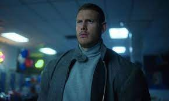
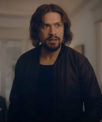
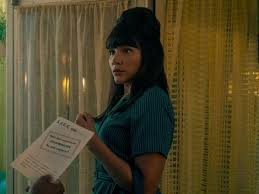
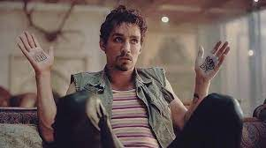
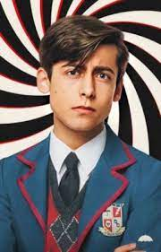
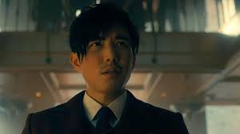
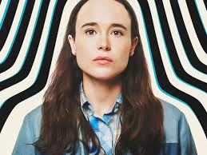

El 1 de octubre el año 1989, 43 mujeres dieron a luz al mismo tiempo, ninguna de ellas estaba embarazada al comenzar el día.
El excéntrico millonario Sir Reginald Hargreeves consigue comprar a 7 de estos niños, 6 de ellos demuestran tener habilidades especiales y forman el grupo de héroes juveniles The Umbrella Academy.
Tras años de abusos paternos, malas relaciones entre hermanos y la pérdida de Ben y Número 5, los hermanos acaban alejándose.
Décadas después, y tras unas vidas adultas desastrosas, se reúnen para el funeral de su padre adoptivo: así comienza la primera temporada de The Umbrella Academy.
Tras 10 capítulos y muchos giros, es difícil recordar en qué situación quedaron los protagonistas, pero para eso estamos nosotros, para refrescarte la memoria de cara a la nueva temporada.

Luther Hargreeves también conocido como número 1 es uno de los 43 niños y niñas que nacieron el 1 de octubre de 1989 de una madre sin signos previos de embarazo.
Él fue uno de los 7 niños que adoptó Sir Reginald Hargreeves para que salvaran el mundo.
Luther tiene el poder de la fuerza bruta, este poder se muestra cuando Cha-Cha le tira una lámpara encima y se levanta sin problemas.
Luther fue el último en dejar la academia. En una de las misiones a las que le mandó su padre cuando ya solo quedaba él, Luther sufrió un accidente y su padre, para salvarle la vida, unió su cabeza al cuerpo de un gorila por la que Luther siempre lleva abrigo y guantes para que nadie le vea

Diego Hargreeves también conocido como número 2 y el navajitas que cautivo a muchos de sus fans de niño Blake Evan Talabis uno de los 43 niños y niñas que nacieron el 1 de octubre de 1989 de una madre sin signos previos de embarazo
El fue uno de los 7 niños que adoptó Sir Reginald Hargreeves para que salvaran el mundo.
Diego tiene el poder de poder controlar la dirección de todo lo que lanza. Este poder se muestra cada vez que Diego lanza uno de sus cuchillos pues puede dar giros muy bruscos sin tocarlos.

Allison Hargreeves también conocida como número 3 es una de los 43 niños y niñas que nacieron el 1 de octubre de 1989 de una madre sin signos previos de embarazo.
Ella fue una de los 7 niños que adoptó Sir Reginald Hargreeves para que salvaran el mundo.
Allison tiene el poder de el rumor que le permite que cada vez que dice "oí el rumor..." puede hacer que la gente haga lo que ella quiera y también alterar la realidad convenciendo a la gente de cosas no reales. Este poder se mostró por primera vez cuando unos ladrones estaban robando en banco con rehenes y Allison le dijo a uno: "Corre el rumor de que le has disparado a tu compañero en el pie" y él lo hizo. Otra vez que se mostró su poder fué cuando tenían cuatro años y Sir Reginald Hargreeves le pidió que le dijera a Vanya: "oí el rumor de que crees que eres normal, que no eres especial", aquí se muestra que puede alterar la realidad pues Vanya se lo creyó y pasó 22 años de su vida sin saber que tenia poderes.

Vida AdultaCuando Klaus sale de rehabilitación inmediatamente compra drogas, y se entera de la muerte de su padre adoptivo después de haber sido resucitado en una ambulancia. Klaus arroja los papeles en un contenedor de basura y lleva la caja a una casa de empeños. Como escucha la aspiradora, Klaus grita pidiendo ayuda, pero la señora de la limpieza no lo oye, ya que su boca está cubierta de cinta adhesiva y está escuchando música. En la Academia, nadie se ha dado cuenta de que Klaus ha sido secuestrado. Mientras tanto, Hazel y Cha-Cha torturan a Klaus para obtener información

Numero cinco se muestra que tiene un intelecto genial, a menudo descartando a otros, incluida su familia, por estúpidos o inferiores, y expresando desinterés en sus asuntos personales. Trabaja incansablemente tanto en el pasado como en el futuro para prevenir el apocalipsis y aparentemente es el miembro más devoto de la familia para detenerlo. Incluso se niega a involucrar a su familia la mayor parte del tiempo por temor a que mueran.

Ben Hargreeves también conocido como número 6 es uno de los cuarenta y tres niños que nacieron el mismo día en 1989 de una madre sin signos previos de embarazo.
El bebé fue uno de los siete adoptados por Sir Reginald Hargreeves con la intención de entrenarlos para salvar el mundo.
Ben posee la habilidad de invocar a criaturas eldritch a través de un portal a otra dimensión ubicada en su cuerpo. La muerte de Ben es una de las principales razones por las que la Academia se disolvió

Vanya Hargreeves también conocida como número 7 es uno de los 43 niños y niñas que nacieron el 1 de octubre de 1989 de una madre sin signos previos de embarazo.
Ella fue uno de los 7 niños que adoptó Sir Reginald Hargreeves para que salvaran el mundo.
Vanya no supo que tenía poderes durante 22 años de su vida porque ella era tan poderosa que su padre le tenía miedo así que le dijo a Allison que hiciera creer a Vanya que era normal, que no tenía poderes. Como sus poderes se ligaban a sus emociones su padre le dio unas pastillas que la sedaban, hasta que su ``novio´´ que sabia que tenia poderes, le quito las pastillas he hizo que se alterara para que mostrara sus poderes. Luego una noche él les pagó a unos hombres para que le pegaran delante de ella y así hizo que ella creara una bomba para protegerlo.
Derechos recervados a Valeria Quiroz Brambila, Sophie Galvan Alejandra Cosio, Jaydy Jay Fuentes ©